Build and ship faster with a developer-optimized Windows experience
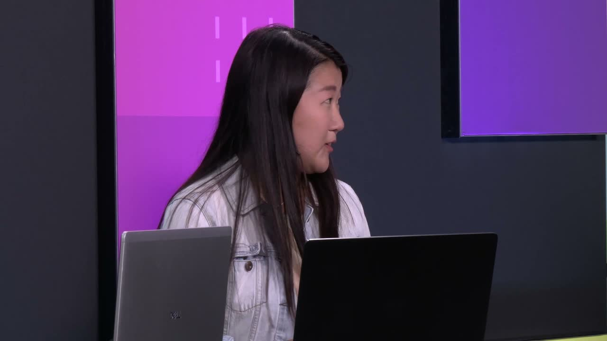
Chapters
Official description
Take a closer look at a developer-optimized Windows experience built to help you move faster. You’ll see how streamlined workflows across WSL, Terminal, WinGet, and your favorite tools reduce friction, leverage agents, build repeatable scenarios, and scale AI projects with confidence.
Summary
Overview
A 15-minute demo-driven session showcasing a developer-optimized Windows 11 experience built around feedback from the "voice of developer" program. The presenters walk through machine setup, terminal enhancements, native containers, AI-assisted Windows app development, and new developer hardware, all aimed at reducing setup friction and accelerating build-and-ship workflows.
Key announcements
- WinGet developer configuration file (~00:02:00
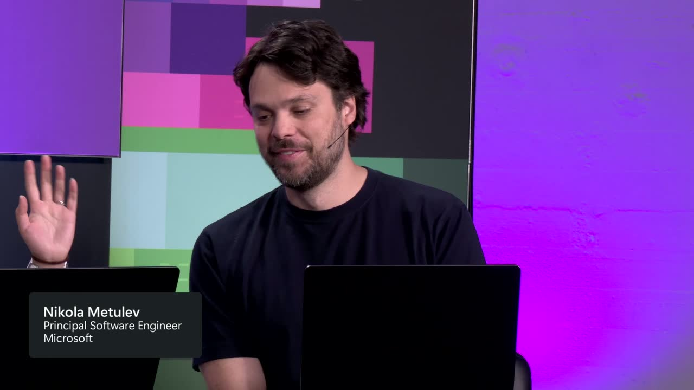
m05s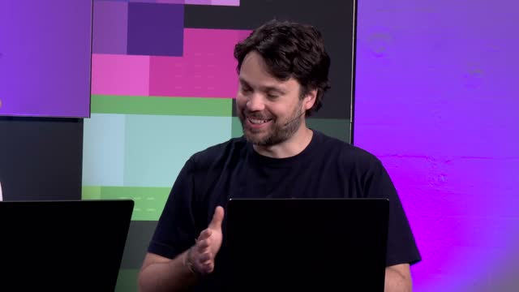
m10s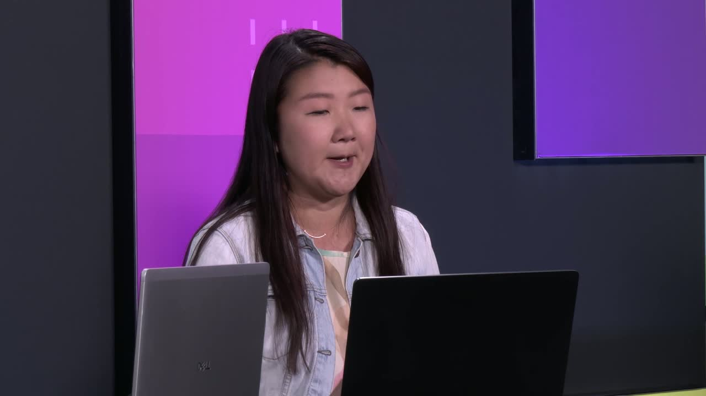
p05s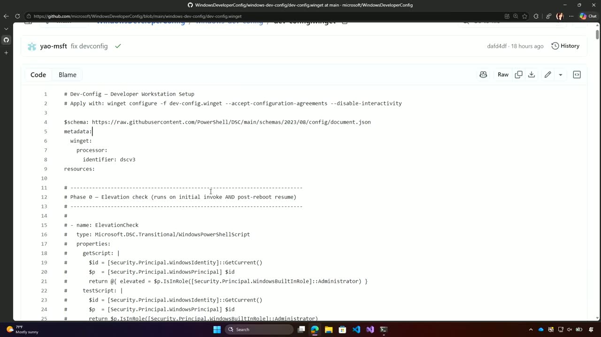
p10s) — A public, forkable GitHub repo with an opinionated WinGet config that installs developer tools (Python, Node, NVM [inferred], PowerToys, Git) and applies settings like dark mode and File Explorer tweaks, removing the need to manually enable developer mode; generally available today. - Core utilities in Terminal (~00:04:01
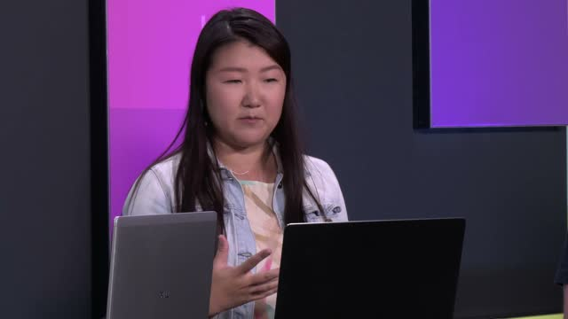
m05s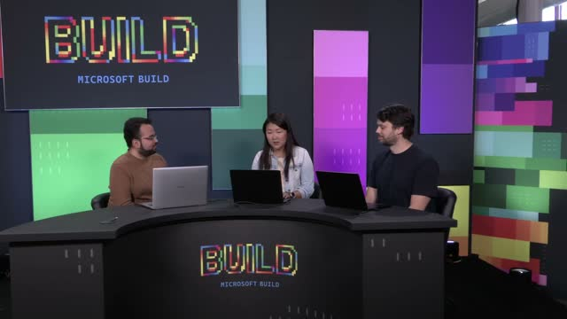
m10s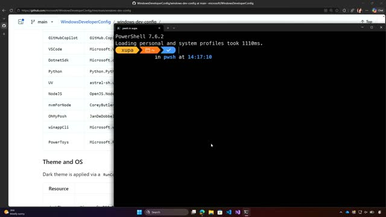
p05sp10s) — Linux-style core utilities (e.g. grep) now run natively in Windows Terminal, letting Unix/Mac/Linux scripts from sources like Stack Overflow or GitHub work without translation to PowerShell. - WSL containers and WSLC binary (~00:05:16
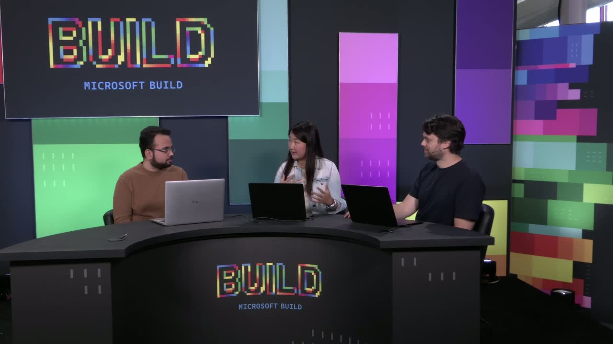
m05s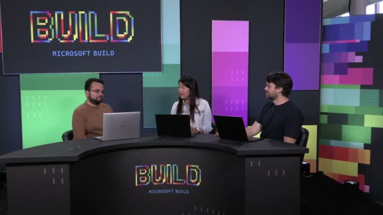
m10s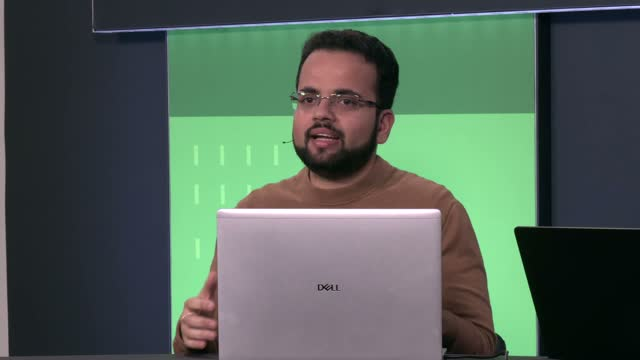
p05s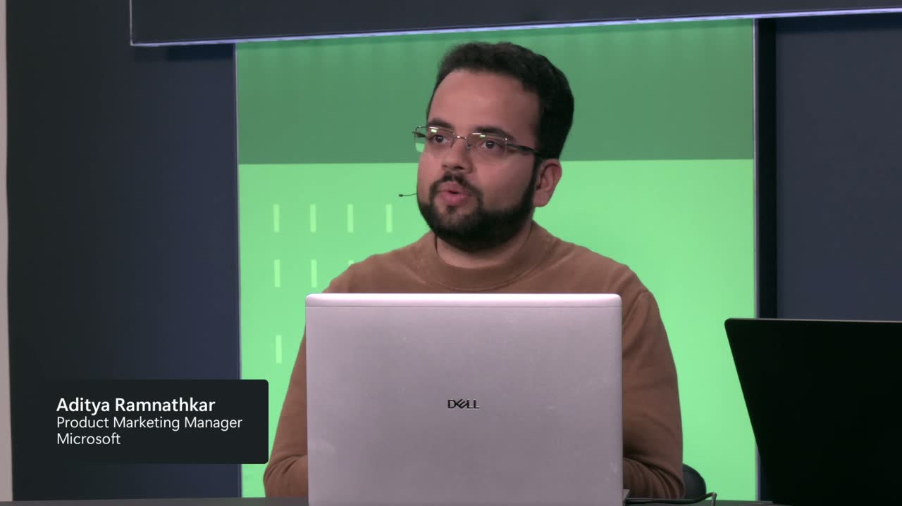
p10s) — A built-in way to create, run, and interact with Linux containers natively on Windows, shipping with the standard WSL update and exposed as an API for use inside native applications, plus enterprise management controls. - Win UI agents and skills plugin (~00:07:39
 m05s
m05s m10s
m10s p05s
p05s p10s) — A plugin bringing skills and agents (packaging, code review, design, templates) for Win UI/Windows development to GitHub Copilot or Claude Code, reportedly saving over 70% of measurable tokens.
p10s) — A plugin bringing skills and agents (packaging, code review, design, templates) for Win UI/Windows development to GitHub Copilot or Claude Code, reportedly saving over 70% of measurable tokens. - WinApp CLI (~00:09:15
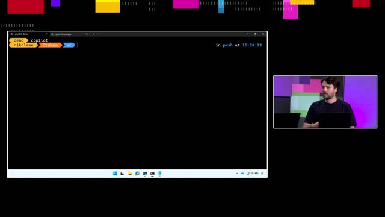
m05s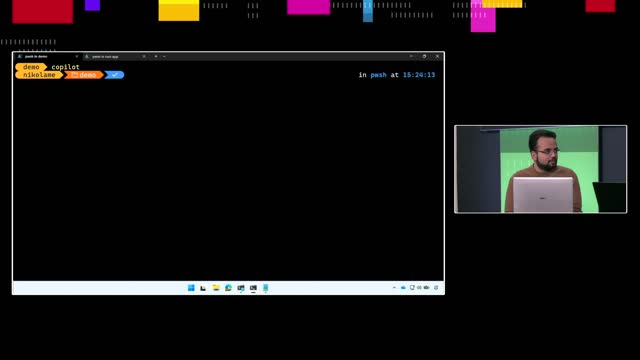
m10s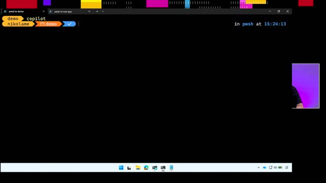
p05s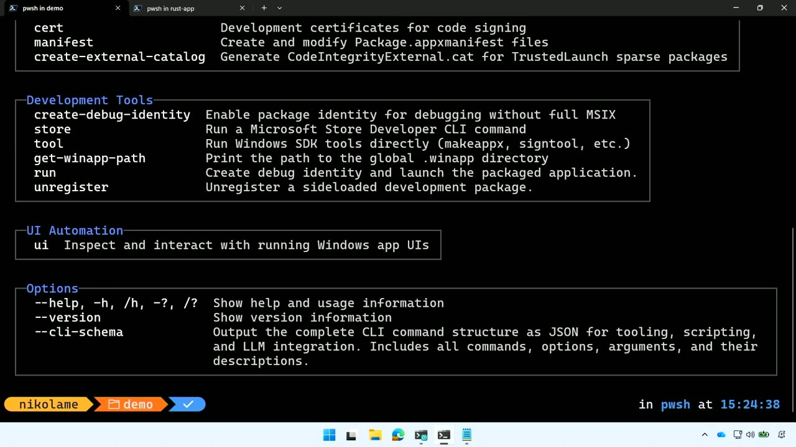
p10s) — A CLI installable via WinGet that packages apps as MSIX, runs applications with package identity, and works with frameworks like Rust without Visual Studio; previously announced earlier this year. - Intelligent Terminal (~00:12:14
 m05s
m05s m10s
m10s p05s
p05s p10s) — An experimental fork of Windows Terminal with integrated agents that analyze failed commands, suggest fixes, retain context across tabs, and connect to Copilot, Claude, or other agents on a permission-based model.
p10s) — An experimental fork of Windows Terminal with integrated agents that analyze failed commands, suggest fixes, retain context across tabs, and connect to Copilot, Claude, or other agents on a permission-based model. - Surface RTX Spark Dev box (~00:14:18
 m05s
m05s m10s
m10s p05s
p05s p10s) — A developer-first GPU machine with the NVIDIA RTX Spark [inferred] offering up to 1 petaflop of AI compute and 128GB of unified memory, preconfigured with the developer tools by default.
p10s) — A developer-first GPU machine with the NVIDIA RTX Spark [inferred] offering up to 1 petaflop of AI compute and 128GB of unified memory, preconfigured with the developer tools by default.
{kind=link}
{kind=link}
{kind=link}
{kind=link}
{kind=link}
{kind=link}
{kind=link}
{kind=link}
{kind=link}
{kind=link}
{kind=link}
{kind=link}
{kind=link}
{kind=link}
{kind=link}
{kind=link}
Topics covered
- Reducing machine setup and update friction for developers
- Distraction-free, developer-first Windows 11 configuration
- Forkable, customizable WinGet configuration files
- Merging Linux/Unix command workflows with PowerShell
- Native Linux container creation, attachment, and detachment via WSLC
- Containers as an API embedded in native Win UI/WPF applications
- Enterprise observability and management of Linux containers
- Agent-augmented end-to-end Windows app development, packaging, and identity
- UI automation tooling that inspects visual trees, takes screenshots, and invokes controls
- AI-assisted error analysis and command correction in the terminal
- Developer-optimized AI hardware
Notable quotes
"Anybody can just create a Markdown file and call it a skill. As part of the work that we're doing here, we're creating a set of tools that agents can use to make it really easy for them to develop Windows applications end to end." — Nikola Metulev
"Through this process we're able to save over 70% of tokens that we can measure." — Nikola Metulev
"Some of them takes a long time to come out as well. We'll do a good job in the future as well to go take our communities with us and build a great Windows environment for our developers." — Beth Pan
Products and tools mentioned
- Windows 11
- WinGet
- Windows Terminal
- Core utilities (grep, netstat)
- PowerShell
- WSL / WSL containers / WSLC
- GitHub Copilot
- Claude Code
- Win UI
- WinApp CLI
- MSIX
- Rust
- PowerToys
- Python, Node, NVM [inferred]
- Visual Studio / VS Code
- Intelligent Terminal
- Surface RTX Spark Dev box
- NVIDIA RTX Spark [inferred]
Speakers featured
- Aditya Ramnathkar — Product Marketing Manager, Windows platform team
- Beth Pan — Principal Software Engineer, Windows platform team
- Nikola Metulev — Principal Software Engineer, Windows platform team
Follow-up resources
- aka.ms/winuiskills [inferred] — download the Win UI skills (stated verbally as "AK dot Ms. Win UI skills")
Frames
{kind=link}
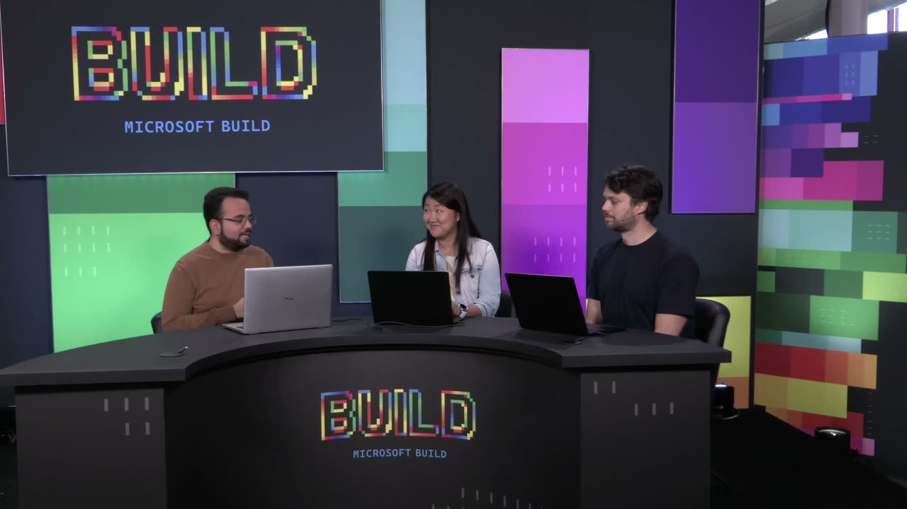
{kind=link}
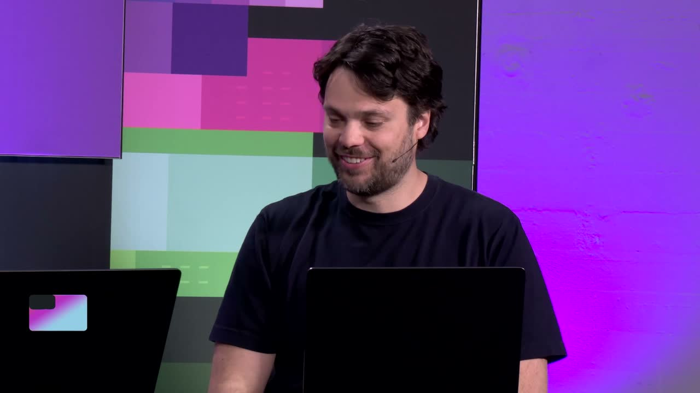
{kind=link}
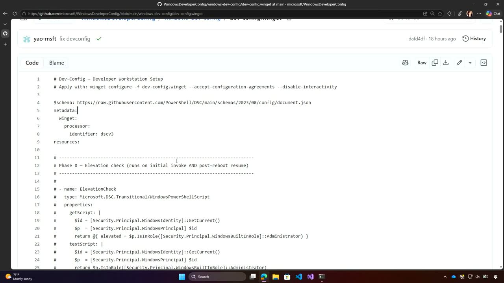
{kind=link}
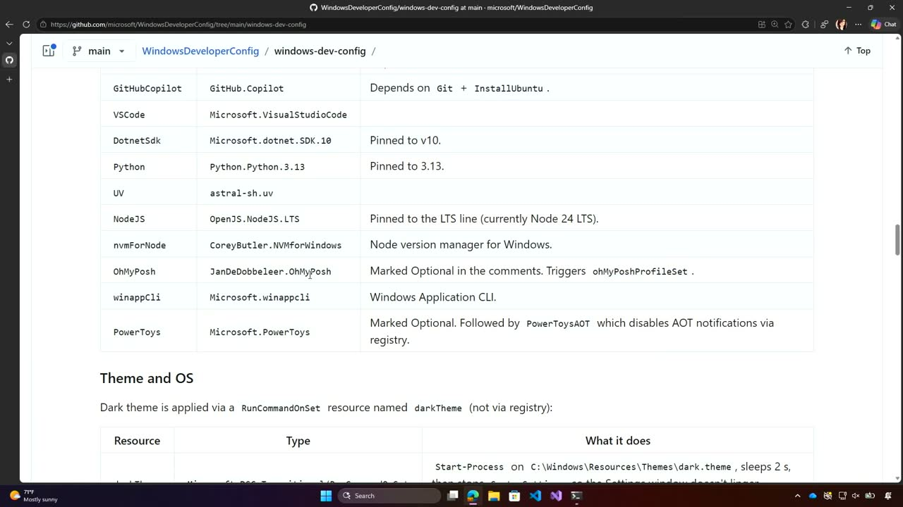
{kind=link}
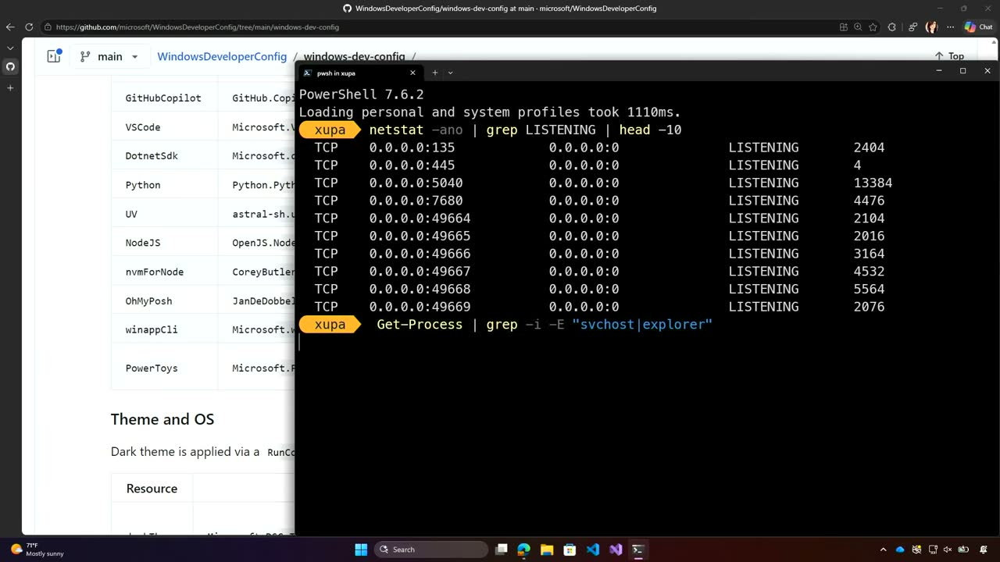
{kind=link}
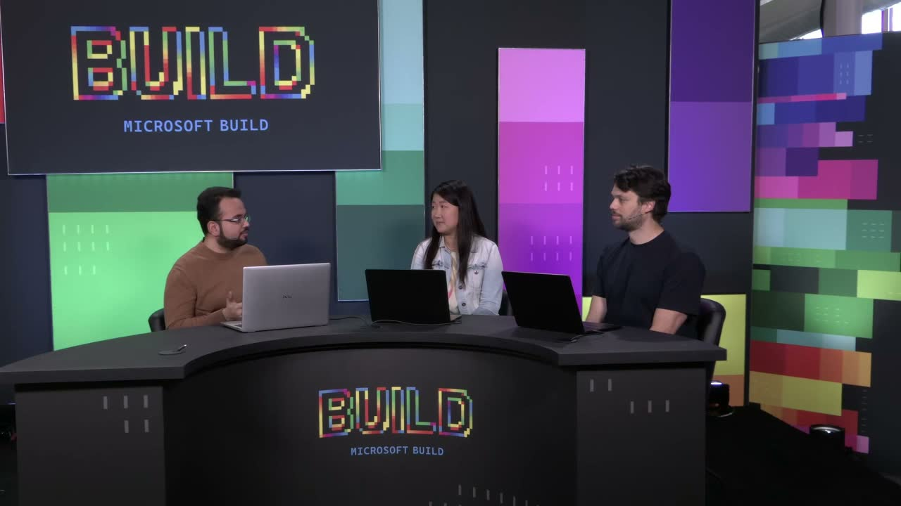
{kind=link}
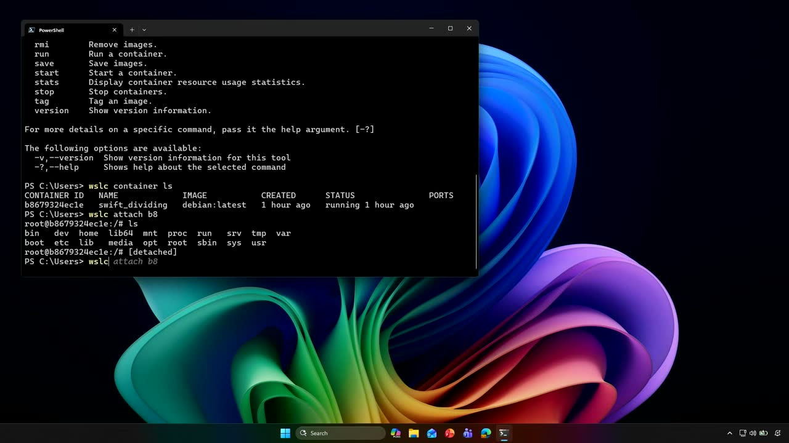
{kind=link}
{kind=link}
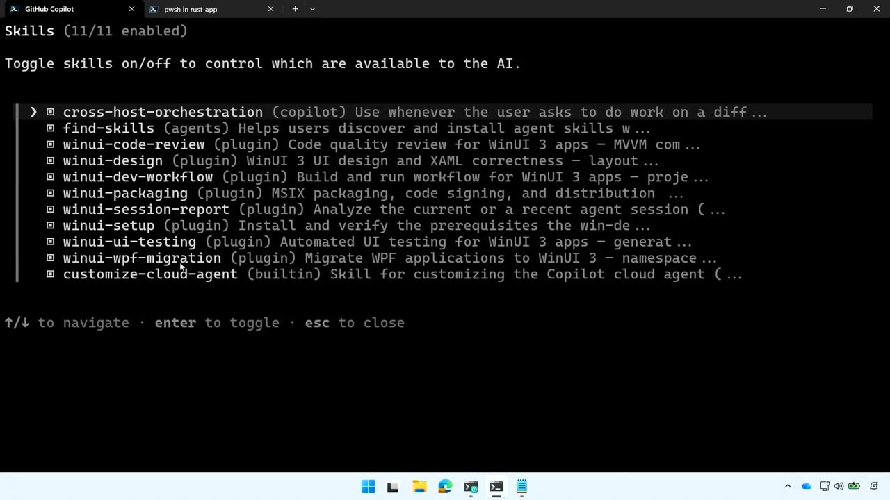
{kind=link}
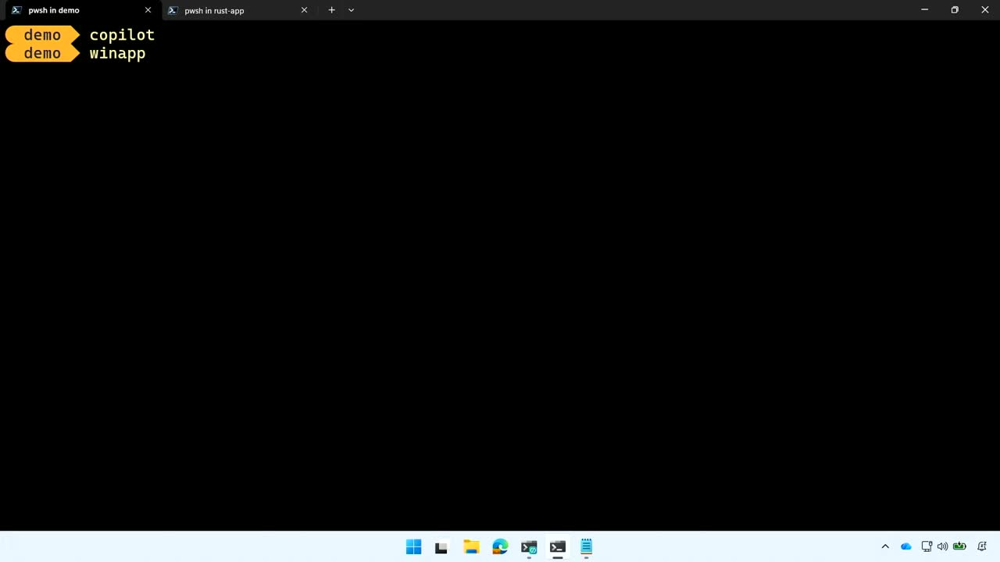
{kind=link}
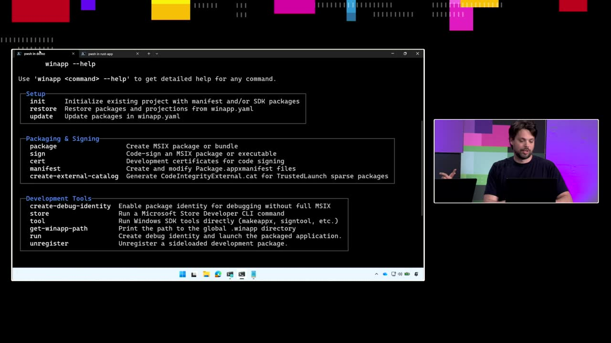
{kind=link}
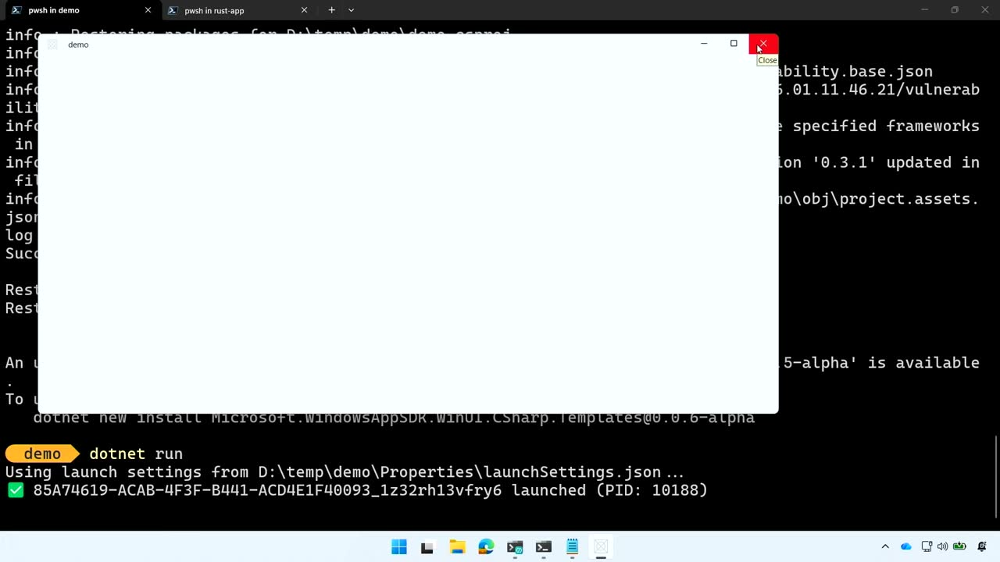
{kind=link}
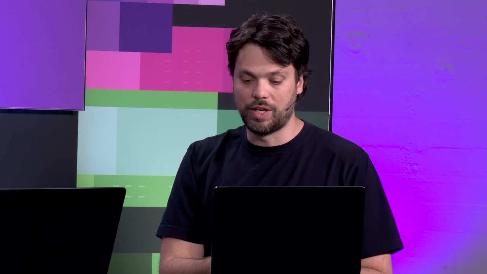
{kind=link}
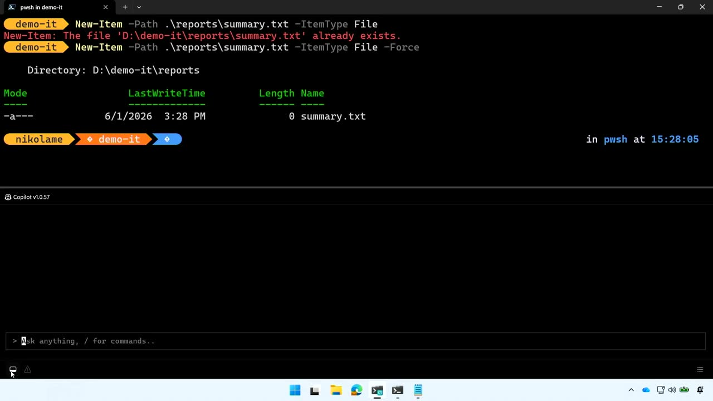
{kind=link}
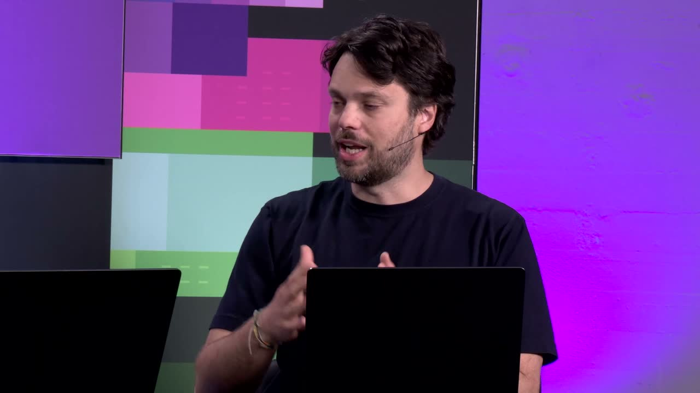
Transcript
Show / hide transcript (23,287 chars)
[00:00:00] Hello everyone, hope you're having a great time at Microsoft [00:00:03] Build. [00:00:03] This is Aditya Ramnathkar, Product Marketing Manager, and I'm today [00:00:07] I'm joined by Beth Pan and Nicola Matulov who are [00:00:09] Principal Software Engineers. [00:00:11] We are all a part of the Windows platform team. [00:00:14] In the keynote this morning you saw how we are [00:00:16] making Windows the best OS for developers. [00:00:19] We have optimized the Windows 11 experience to be developer [00:00:22] 1st and distraction free. [00:00:25] We are shipping a ton of developer goodness this week. [00:00:28] Core Utils, native Linux containers with WSL one command environment [00:00:32] setup with developer configurations, agent augmented coding with Windows development [00:00:37] skills and intelligent terminal. [00:00:40] And lastly, purpose. [00:00:41] Next generation hardware purpose built for local AI and sustainable [00:00:45] workloads. [00:00:46] All of these designed to make you build and ship [00:00:49] faster on Windows. [00:00:51] Let's take a dig into each of these. [00:00:53] Beth has been talking to developers, getting their feedback on [00:00:56] what is the experience to get started on Windows and [00:00:59] we'd love to hear from her. [00:01:01] So we've talked to a lot of developers in the [00:01:03] past couple years. [00:01:04] We've heard a lot of your feedback. [00:01:05] This is why we're doing these things. [00:01:07] One of the main pain points from our developer audience [00:01:10] has always been, you know, why is my machine needs [00:01:12] a lot of updates and setup and how do I [00:01:14] get to the clean state that I, you know, there's [00:01:17] no distractions that we, I can have everything that I [00:01:19] need and just ready to go and I can be [00:01:21] productive. [00:01:22] So as Aditya said that we're gonna, if you're a [00:01:25] developer and you come into Windows, we're gonna offer you [00:01:28] a way to set up your machine to remove all [00:01:31] the distractions that you've been asking us to remove and [00:01:34] then installing everything that might be useful for you. [00:01:38] So tell me what are you guys favorite developer configurations [00:01:42] or apps? [00:01:43] I love power toys, I just use that every day [00:01:45] of. [00:01:45] Course. [00:01:46] I just use all the tools whenever I need them. [00:01:48] I want them to be available so get Python node. [00:01:51] I use all of them. [00:01:51] All of them all. [00:01:52] Of them, you're going to get all of them. [00:01:54] So Python, Node, MVM and Power toys. [00:01:58] We have a lot of these apps that's going to [00:02:00] be installed through this Winget configuration file that we're going [00:02:04] to publish. [00:02:05] And you can see on my screen here, it is [00:02:07] a GitHub repo that will be public and then our [00:02:10] developer friends, if you want to fork this, configure it [00:02:14] however your way. [00:02:16] It'll be flexible. [00:02:18] Is there an option to add any other tools? [00:02:20] Of course, that's the whole point of Wingat configuration. [00:02:24] Any other questions? [00:02:25] Right, so I can take this file now and I [00:02:27] can just run it through Winget and I can install [00:02:29] all the tools that we recommend for developers they might [00:02:32] need. [00:02:32] So it installs git and what else does it install? [00:02:35] It is kind of like how you call it opinionated [00:02:37] way that we think what's important for developers. [00:02:40] For example, we don't need you to turn on developer [00:02:44] mode anymore. [00:02:46] You we don't, you don't have to turn on developer [00:02:49] mode anymore. [00:02:51] Dark mode configuration, things like file, hidden files like File [00:02:55] Explorer, some of the configurations there. [00:02:58] There's a full list of things that you can see. [00:03:00] I can go back if we want to to see [00:03:02] the read me and see the list of applications is [00:03:06] going to be here. [00:03:08] So I don't need to go to settings anymore and [00:03:10] do that one by one. [00:03:11] Nope. [00:03:11] I can just run and get configured. [00:03:13] Correct. [00:03:13] Awesome. [00:03:14] Now my understanding is that this is by default going [00:03:17] to be on some of our new devices we announced [00:03:20] today. [00:03:20] And this is for developers that might want to set [00:03:22] up their existing devices with all the new tooling and [00:03:24] existing. [00:03:25] Tooling, that's a great call out. [00:03:26] So if you're coming into Windows to our shiny new [00:03:29] boxes, right, this is just going to be set up [00:03:31] for you as a developer. [00:03:33] If you want to you know compatibility is something that [00:03:37] we treat very seriously on or with English is hard, [00:03:40] then you can use this Wingat configuration by yourself. [00:03:45] Awesome. [00:03:45] And today it is generally available, so try it out [00:03:48] now, right? [00:03:49] What next bit? [00:03:52] Since we're talking about setting up developer devices, let's say [00:03:55] that I have a machine that I set up today. [00:03:57] What do I do? [00:03:57] I feel like as a developer, I will go to [00:03:59] Terminal to see what's going on there. [00:04:01] So today we're making it available for people to use [00:04:06] all these cool Linux style commands, core utilities in Terminal. [00:04:12] Remember this thing that you've been asking for here again, [00:04:15] you asked? [00:04:15] Well listen now you can do grip with internal OSO. [00:04:19] Finally. [00:04:21] For example, there's a very simple demo that I can [00:04:27] just check my net stat status. [00:04:31] And something else that I find very interesting is, you [00:04:35] know, let's say that you want to do some sort [00:04:37] of PowerShell and then I grab something after it. [00:04:41] So this is an example of merging these two kind [00:04:44] of systems together. [00:04:46] Right. [00:04:47] So now, if you're copying some code from, let's say [00:04:49] Stack Overflow, right, or you're getting some scripts from GitHub [00:04:52] that might have been written for Unix or Mac or [00:04:55] Linux, they will work if they're using all these creatilities [00:04:57] because they will also be available on Windows. [00:05:00] They can make available so you don't have to go [00:05:02] and translate it to PowerShell. [00:05:03] Exactly any other questions class? [00:05:06] That's great. [00:05:08] I think we're going to move on to. [00:05:10] Since we're talking about Linux Unix commands, let's talk about [00:05:14] WSL as well. [00:05:14] Sure. [00:05:16] So as we all know, containers are a core part [00:05:18] of modern development workflows. [00:05:20] And to make that experience seamless on Windows today, we [00:05:23] are introducing WSL containers, a built in way to create, [00:05:26] run and interact with containers directly on Windows. [00:05:30] So whether you're working on local development, AIML workflows, or [00:05:34] even containerized testing, Linux containers just work natively on Windows [00:05:38] out-of-the-box. [00:05:39] As a part of WSL containers, we are shipping WSLC, [00:05:43] which is a binary that you can use to create, [00:05:45] run, and interact with containers directly without having to install [00:05:50] any third party tools or require additional tooling efforts. [00:05:54] This all ships with the standard WSL update, so you [00:05:57] don't have to do any other configurations apart from just [00:06:00] updating to the latest version. [00:06:02] Wow. [00:06:03] Awesome. [00:06:06] And it is as simple to use as just listing [00:06:11] your existing container. [00:06:14] So you can see WSLC container LS easier. [00:06:16] It shows me I have one container running, I can [00:06:20] go into that by attaching it to the container and [00:06:23] then I'm gone into my Linux shell. [00:06:26] I can just do all my Linux workloads. [00:06:28] When I am done, I can come out of the [00:06:31] shell and just detach it and then quickly see the [00:06:34] status again or work as needed depending on my workflows. [00:06:38] This is feedback we have been receiving from developers for [00:06:41] a very long time of being able to just natively [00:06:43] run containers inside of Windows. [00:06:45] But the thing that really excites me here that you [00:06:47] mentioned is also that we also support this as an [00:06:49] API, right, Which enables usage of these containers inside of [00:06:52] applications. [00:06:53] Which now means that I can have a native application [00:06:55] that has native UI, it's running Win UI or WPF [00:06:58] or whatever it is, but it could also have a [00:07:00] Linux container as part of it. [00:07:02] So it could mix this Linux code that you might [00:07:04] be using across platform, but it's not running natively inside [00:07:07] of your Windows machine next to your native code for [00:07:09] Windows, which is opens up all these possibilities for creating [00:07:12] this incredible experience. [00:07:15] And with that, we're also allowing some new controls for [00:07:17] enterprises to manage these Linux containers so that they have [00:07:20] visibility and observability to all the amazing work that the [00:07:23] developers are doing in their enterprises. [00:07:25] So that's. [00:07:26] So we've talked about, you know, setting up your machine, [00:07:29] we went to terminal and talked about core utilities and [00:07:32] we talked about WSL kind of naturally transition into building [00:07:35] apps on Windows and now building apps for Windows. [00:07:38] Nicola, do you have a? [00:07:39] Right. [00:07:39] So as part of the work that we're doing here [00:07:42] and stuff that we announced today at the keynote is [00:07:44] we're making it really easy for developers to build Windows [00:07:48] applications with AI tools. [00:07:49] So either using GitHub Copilot or using Cloud Code. [00:07:53] So for example, here I have GitHub Copilot open on [00:07:55] my machine. [00:07:56] And some of the things that we announced is a [00:07:58] new set of agents and skills for Win UI development [00:08:01] or Windows development in general. [00:08:03] So for example, here I have installed a plugin called [00:08:06] Win UI. [00:08:07] So if I list all my plugins installed here, you'll [00:08:10] see we have this new Win UI plugin right there [00:08:13] that's installed. [00:08:14] This comes with several skills and agents. [00:08:17] So you can see here we have all these Win [00:08:19] UI new skills that exist as part of this that [00:08:22] do things like, hey, packaging or code review or design [00:08:25] that bring all that back together. [00:08:28] The interesting thing part this is, this is not just [00:08:30] about markdown, right? [00:08:31] Anybody can just create a Markdown file and call it [00:08:33] a skill. [00:08:34] As part of the work that we're doing here, we're [00:08:36] creating a set of tools that agents can use to [00:08:38] make it really easy for them to develop Windows applications [00:08:41] end to end. [00:08:42] And through this process we're able to save over 70% [00:08:45] of tokens that we can measure. [00:08:47] So that was saving a lot of the cost when [00:08:48] using these AI tools to build Windows applications. [00:08:51] There used to be a lot of steps right around [00:08:53] how you're actually writing your code before. [00:08:56] It's like templates initiation. [00:08:58] Is that what you're doing now? [00:08:59] And then all of the packaging identity. [00:09:01] Great. [00:09:02] Exactly, Agent will take care of that for me. [00:09:04] Right. [00:09:04] So before it wasn't that easy to do that other [00:09:06] thing. [00:09:07] You have to use Visual Studio for a lot of [00:09:08] these different things. [00:09:09] So an agent wasn't able to go and use the [00:09:11] terminal to be able to run a packaged applications or [00:09:13] add identity to a running application. [00:09:15] So what we've done here, we've added a new CLI [00:09:18] called the Winamp CLI we announced earlier this year. [00:09:20] You can just install it through Winget with just Winget, [00:09:23] install Winapp and you'll be able to do a lot [00:09:26] of these different commands as part of that. [00:09:28] So you can do things like packaging directly from just [00:09:31] a folder. [00:09:32] You can package it as an MSI X or you [00:09:34] want to run an application directly as with Identity, you [00:09:37] can do that quickly. [00:09:38] Like for example, I have a Rust application here. [00:09:40] This is just a Rust console application that I've created [00:09:44] here and I can just simply Winapp run the application [00:09:47] here and it will run this Rust based console application [00:09:50] and it will really give it package identity. [00:09:53] So you can use those APIs like a lot of [00:09:55] the notification APIs or you can use a lot of [00:09:57] the AI APIs that we have in there directly from [00:10:00] here. [00:10:00] No Visual Studio required. [00:10:02] And I don't have to learn all the nitty gritty [00:10:04] of the whole Microsoft system if I'm a Rust developer. [00:10:07] You continue developing with the framework that you're already using, [00:10:11] but it's best. [00:10:12] But exactly we can extend it with the existing APIs [00:10:14] really quickly. [00:10:15] We are having to use a lot of the other [00:10:17] tools. [00:10:17] I love the. [00:10:18] Name by the way. [00:10:20] Thank you. [00:10:21] We also added some other features to our skills to [00:10:23] be able to make it easier for them to build [00:10:25] Windows applications. [00:10:27] For example, we now have new net new templates for [00:10:30] Win UI. [00:10:31] So an agent can create new Win UI application as [00:10:33] well as users and be able to get started quickly [00:10:35] with the best practices in mind so you don't have [00:10:38] to guess on how to build an application. [00:10:40] And through the integration with Winapp, we can now also [00:10:44] run these applications directly from the terminal. [00:10:48] So now you can run a fully packaged application directly [00:10:50] from the terminal when your application in this case. [00:10:53] So I no longer need to open VS Code at [00:10:55] all. [00:10:56] You can, you can, you don't have to. [00:10:57] It's up to you, but you can do everything here. [00:10:59] And the whole idea is that now an agent can [00:11:02] fully build an application from creating it through debugging issues. [00:11:07] We have tools here for figuring out the stack traces [00:11:09] for what when something went wrong. [00:11:11] We have tools for figuring out what the code you [00:11:13] should use, what controls you should use. [00:11:15] We we connect the agents to samples so they can [00:11:18] know what the best practices are. [00:11:20] And one of my favorite things here that we do [00:11:23] also, we have a utility for interacting with Windows applications. [00:11:27] So if you use the Winamp UI tooling, for example, [00:11:30] you can inspect running applications. [00:11:32] In this case I have notepad that's running here on [00:11:35] the side and you can see here I can see [00:11:37] all the buttons and everything that's as part of that [00:11:40] application. [00:11:42] And I can even from the terminal I can invoke [00:11:46] that button there it. [00:11:48] Looks at the visual tree and. [00:11:50] Exactly. [00:11:52] It can take screenshots so as an agent it knows [00:11:54] when something is functionally working so he can on its [00:11:57] own fix issues and it can catch those type of. [00:11:59] Issues iterations. [00:12:00] That's right. [00:12:01] That sounds really exciting. [00:12:02] How can I get started? [00:12:04] The best way to get started is just to go [00:12:06] on AK dot Ms. [00:12:07] Win UI skills and you will to download our skills. [00:12:10] Or you can download the Win app CLI on its [00:12:12] own. [00:12:13] But there's one more thing I want to show you [00:12:14] here that we announced today, which is the intelligent terminal. [00:12:18] The intelligent terminal is this fork of the Windows terminal [00:12:21] that we all know and love that has some experimental [00:12:24] features of integrating agents directly in it. [00:12:28] So it's a different I have them side by side. [00:12:30] Here you can see I have two different terminals running. [00:12:32] And you can see this one has this little nice [00:12:34] cute icon on the bottom. [00:12:35] But for example, let's say I'm here and I run [00:12:38] a command that errors out. [00:12:39] In this case, I probably forgot how to type something [00:12:42] or I mistype it. [00:12:43] You'll see here that this terminal now can actually analyze [00:12:46] that whenever it happened and it can allow me to [00:12:48] say, OK, we know how to fix this. [00:12:50] You probably just meant to add the force attribute there. [00:12:53] Or I could open up directly into the attached included [00:12:57] agent view as well and I can interact and I [00:13:01] can ask it to do things. [00:13:02] I can just say fix it for me and it [00:13:05] will just go in magically. [00:13:07] Has context of all the running commands that I ran [00:13:09] across all my tabs. [00:13:11] It comes with copilot already built in but I can [00:13:13] connect it to Claude if I want it in here [00:13:15] or other agents as well. [00:13:16] And I can experiment. [00:13:17] So experimental. [00:13:18] We'd love people to give us feedback on this. [00:13:20] I assume it's gonna ask me for permissions to do [00:13:22] these things, right? [00:13:23] Of course it's all permission based. [00:13:25] You have to approve to access all your commands. [00:13:27] You have approve to actually run commands for you. [00:13:29] You can't just do it. [00:13:31] But again, it's experimental. [00:13:32] You have to install it side by side and try [00:13:34] it out and give us feedback. [00:13:35] So what if I don't use GitHub profiler? [00:13:37] Can I add other agents as well? [00:13:39] Right, exactly. [00:13:39] So you can bring in any agent that you have [00:13:41] as part of it. [00:13:41] You use the same protocol that all these agents use [00:13:44] and you can tie it into here. [00:13:46] You can just go to settings and set it all [00:13:48] up. [00:13:48] I don't have to remember how to cherry pick things [00:13:51] anymore. [00:13:52] Right that's my one of my biggest things I go [00:13:55] to online searching is forget issues. [00:13:57] Whenever something happens and my state is in the wrong, [00:14:00] whatever, I have to always go. [00:14:02] How do I reset back without losing any of my [00:14:04] changes? [00:14:04] What is the command I have to use? [00:14:05] I never remember. [00:14:06] I can just ask it in line without losing contacts [00:14:09] and knows what I'm doing. [00:14:10] I'll just do it. [00:14:11] That's going to be such a great productivity. [00:14:13] I can't wait to get started on that. [00:14:15] Exactly. [00:14:16] Cool. [00:14:18] OK, so along with all these software optimizations that are [00:14:22] available to all Windows 11 devices, today we also introduced [00:14:26] Surface RTX Spark Dev box. [00:14:28] It is a developer first GPU machine coming with the [00:14:31] new NVIDIA RTX Spark that provides up to 1 petaflop [00:14:35] of AI compute and 128 gigabytes of unified memory. [00:14:38] Access. [00:14:38] I'm getting that on day one. [00:14:40] That's great, and it also comes optimized with all our [00:14:43] amazing developer tools already available by default, right? [00:14:45] What's that mean? [00:14:47] Shut up and take my money. [00:14:49] OK, let's roll the video. [00:14:54] I was pulled to you. [00:15:20] It's because of all the butter loved you still all [00:15:23] my life, that you really ever loved me. [00:15:27] And it won't be only when I'm good. [00:15:29] Not that I'm gone. [00:15:32] What do you think about me? [00:15:39] Think about me, dream about me? [00:15:42] What do you think about everything? [00:15:43] Simple. [00:15:50] Awesome. [00:15:50] I think we've talked about a lot of the things [00:15:53] today that we talked about is actually based off of [00:15:57] our developer audiences feedback. [00:15:59] We call it voice of developer. [00:16:00] We treat that very seriously. [00:16:02] Some of them takes a long time to come out [00:16:04] as well. [00:16:05] We'll do a good job in the future as well [00:16:08] to go take our communities with us and build a [00:16:11] great Windows environment for our developers. [00:16:15] Yeah. [00:16:15] And we have shipped a lot of developer goodness today. [00:16:17] So we'll love for all our developer community to go [00:16:19] try out these and integrate them in your workflows and [00:16:21] let us know what do you think about it. [00:16:24] Cool. [00:16:25] I think that's it. [00:16:26] That's it, yeah. [00:16:27] Thanks everybody. [00:16:28] Thank you so much.